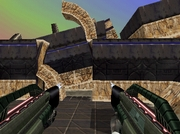
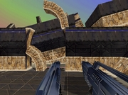
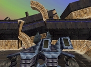
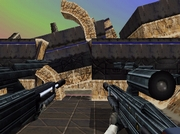
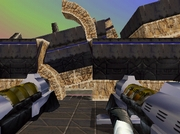
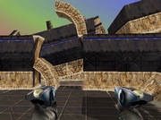
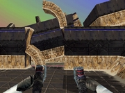

|
.
| Perfect
Dark : Avoir
TOUTES les Armes en Double en Mode Solo |
| Ci-dessous,
un Code Magnifique, qui vous permet de porter TOUTES les Armes du
jeu en Double, en Mode Solo. En fait, le Jeu duplique le Modèle
de Droite (Joanna est droitière) pour le greffer à
la Gauche de l'Ecran, en changeant la vue. C'est assez drôle,
car désormais, vous avez 4 mains ! Pour le Laser, ça
ne change rien, il apparait juste à la Gauche de l'écran,
on ne peut pas en avoir deux. Pour les Remote Mine, çà
ne change rien. Enfin, pour le Slayer, çà ne fonctionne
que dans les Niveaux où on peut l'utiliser (Skedar Ruins
et WAR!) Evidemment, ce Code n'est amusant que si vous le combinez
avec les Codes All Guns et Infinite Ammo... Sinon vous ne pourrez
pas vous servir des Armes puisque pas de cartouches ! |
 |
 |
 |
 |
Callisto
NTG |
RCP-120 |
Laptop
Gun |
Dragon |
 |
 |
 |
|
K7 Avenger |
AR-34 |
Super-Dragon |
Timde
Mine |
 |
 |
 |
 |
Reaper |
Sniper
Rifle |
Remote
Mine |
Devastator |
 |
 |
 |
 |
Rocket
Launcher |
Crossbow |
Tranquilizer |
Grenade |
8006C896 00F6
8006C722 00F6
8006D1BA 00B6
8006C9E6 0076
8006CFA6 0036
8006CDCE 0076
8006CC1E 0076
8006D33A 0076
8006D53E 0036
8006E6D2 0076
8006E0DE 0076
8106DA42 7250
8106D71A 7250
8106D88E 7250
8006E2F2 0036
8006E4CA 00F6
8006DA42 0072
8006DA43 0050
8006D71A 0072
8006D71B 0050
8006D88E 0072
8006D88F 0050
8006DED6 00B6
8006DF82 00B6
8006DB1E 0036
8006DCC6 0036
8006E56E 00F6